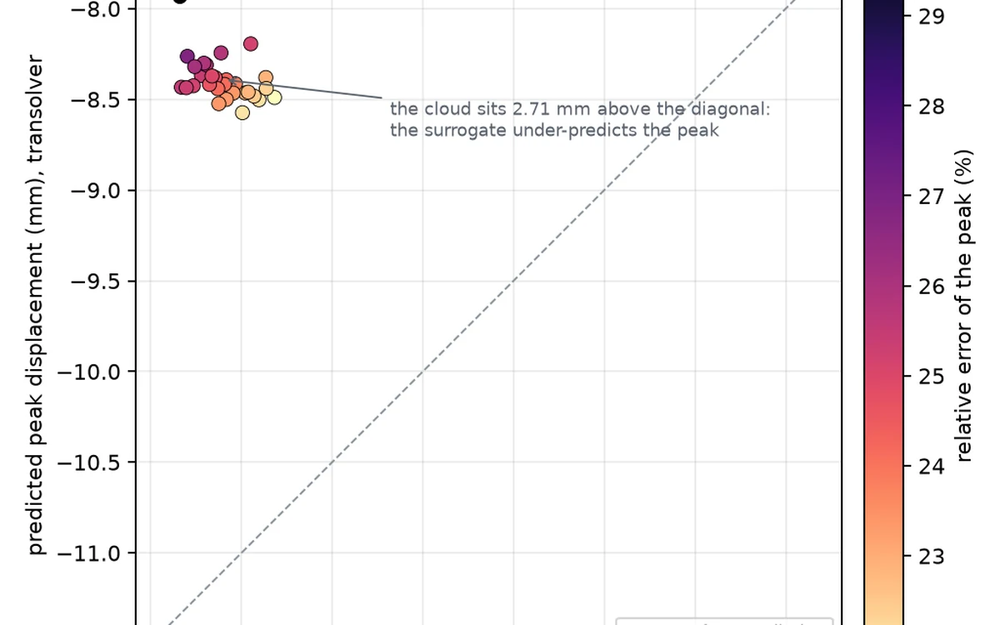
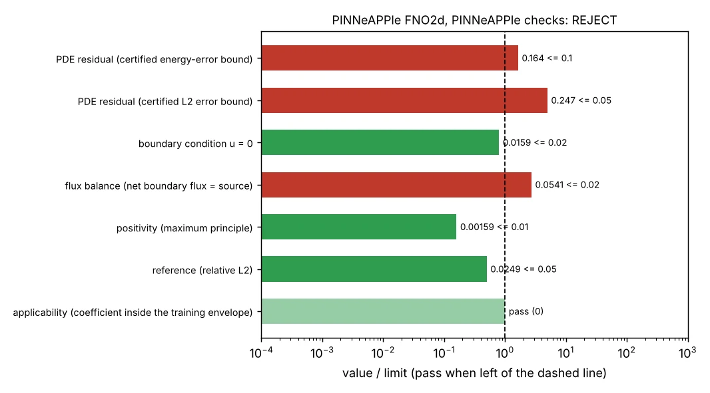

01 · Consultoria em Physics AI
Projetos personalizados de engenharia, simulação, surrogate models, otimização e integração industrial. Do diagnóstico à validação e entrega.
Physics AI · Open Source · Engenharia e Ciência
Unimos física, simulação numérica e inteligência artificial para desenvolver tecnologias abertas, acelerar a pesquisa científica e criar soluções de engenharia para desafios reais da indústria.
Da pesquisa à aplicação industrial: explore a tecnologia aberta ou converse conosco sobre um projeto personalizado.
Produtos
Duas formas de levar Physics AI ao seu projeto: desenvolvimento personalizado com nossa equipe ou uso do PINNeAPPle Studio.
Projetos personalizados de engenharia, simulação, surrogate models, otimização e integração industrial. Do diagnóstico à validação e entrega.
Ambiente de software para estruturar problemas físicos, executar fluxos de modelagem e simulação e acompanhar verificações e evidências.
Escolha entre um projeto desenvolvido conosco ou a experiência de software do Studio.
O problema
Simulações permitem compreender fenômenos complexos, mas podem exigir muito tempo, computação e conhecimento especializado. Physics AI amplia essas capacidades, desde que seus resultados sejam verificáveis.
Surrogate models e operadores neurais podem acelerar análises, quando apropriados e validados.
Pipelines integrados conectam dados, simulação, treinamento e implantação.
Verificação, validação, rastreabilidade e limites de aplicação explícitos.
DO PROBLEMA AO NÚMERO
O caminho é o mesmo, com consultoria ou com o Studio: cada etapa deixa um artefato, e a verificação pode recusar o resultado antes de ele virar relatório.
O que precisa ser decidido e qual número prova a decisão
Domínio, materiais, equações e condições de contorno
O caso rodando em OpenFOAM, FEniCS ou CalculiX
Casos conferidos, com convergência e incerteza registradas
Modelo rápido, com os limites de validade declarados
Comparação contra o solver, relatório e próximo passo
Laço de retorno: se a verificação reprova, o caso volta para a geometria com um novo candidato — o número só entra no relatório depois de passar.
Fluxo ilustrativo do processo — não é resultado de simulação.
Consultoria
Além da plataforma aberta, desenvolvemos soluções de Physics AI sob medida. Começamos pelo problema físico, definimos escopo e critérios de sucesso, e avaliamos a abordagem mais adequada.
Entendemos o desafio, os dados disponíveis, as restrições e as métricas de sucesso.
Combinamos simulação, IA e ferramentas de engenharia em um pipeline reproduzível.
Documentamos evidências, incertezas, limites de uso e resultados do projeto.
Resultados e evidências
Explore aplicações reais e estudos técnicos com métricas, referências de comparação e limitações documentadas.


Casos de sucesso
O que a gente resolve
Cada um já teve um estudo publicado, com o número medido contra uma referência externa. Se o seu caso é parecido, o caminho existe.
Onde a parede vai furar, a que taxa em mm/ano e em quanto tempo — na sua geometria, no seu material e no seu ponto de operação.
Se o trocador dá conta com a incrustação, quanto tempo até sair da faixa e onde o calor não dissipa, com a incerteza declarada.
A válvula, o bocal ou o orifício no seu ponto de operação: vazão, perda de carga e o regime que o catálogo do fornecedor não cobre.
O produto · 2027
A engenharia em texto: você escreve o que precisa, e a plataforma encontra uma ferramenta que já existe, confere se o seu caso está dentro do que aquela ferramenta já provou, roda e devolve o resultado com relatório e evidência.
Artigos
Um experimento por artigo, com imagens, vídeo e os números que saíram da execução. Inclusive os que limitam o resultado.

Um para-choque contra poste rígido, 200 projetos resolvidos pelo solver explícito do PINNeAPPle e um Transolver que lê as sete variáveis de projeto. Nos 30 projetos mantidos fora do treino, o deslocamento de pico sai com 24,4% de erro médio — e o mesmo modelo sem o vetor de projeto vai a 41,7%.
14 de novembro de 2026
Uma placa fria com 50 layouts, um FNO de 1,18 milhão de parâmetros treinado em 133 s e 1,7% de erro contra a solução de volumes finitos. E o cartão de confiança dizendo não.
13 de novembro de 2026
Três caminhos entre o PINNeAPPle e o Unity: o gêmeo exportado como projeto, uma cena do Unity virando camada OpenUSD com física, e uma ponte HTTP que responde em 23 ms enquanto o jogo roda.
13 de novembro de 2026Quem faz
A PINNeAPPle começou como uma biblioteca pessoal para não ter de confiar: cada resultado carrega a referência contra a qual foi conferido. Virou produto quando ficou claro que o problema não é o modelo, é a falta de prova.
Dizer “não” faz parte. Num caso de mobilidade de rover, o método numérico clássico era mais rápido e mais exato que a rede; a recomendação foi o método clássico.

Físico de formação, une física, IA e engenharia para levar modelos científicos a aplicações reais. Criou o PINNeAPPle e atua com IA aplicada a problemas de engenharia e indústria no Brasil.

Vamos construir sua solução
Converse com nossa equipe sobre consultoria em Physics AI ou conheça o PINNeAPPle Studio para explorar nossos fluxos de modelagem e verificação.